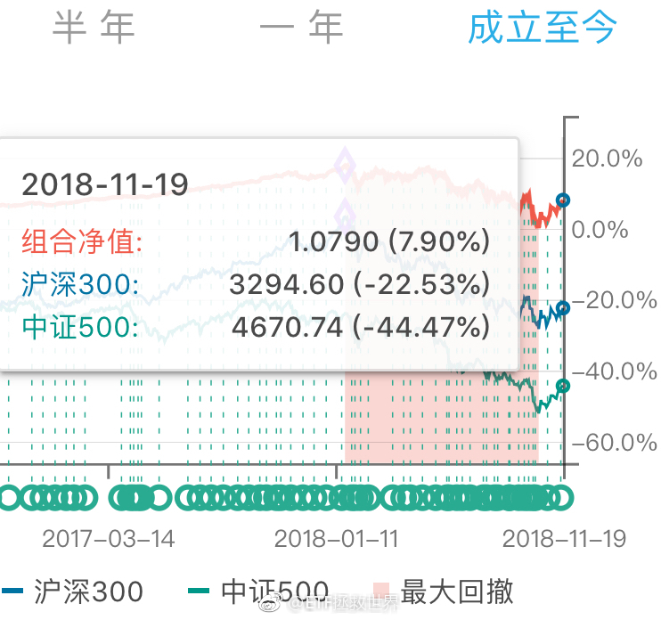

我的体系中，趋势投资只有两个买点：第一是突破的时候。如果涨幅不大就直接买。第二是突破后回踩的时候。这样，就可以保证成本不会高，即使趋势再度走坏，也能不赔少赔钱。只有这两次，很严格。如果没买，再怎么涨也不追了。当然，这都是雕虫小技，辅助一下而已。价值投资是王道欧耶。
回复@maxcasio:趋势投资是由弱转强的时候投。人家翻了N倍了你还去追那叫什么趋势投资。//@maxcasio:趋势投资法，了解下@ETF拯救世界:百思不得其解的是，为什么一个品种还没涨，很便宜的时候，无人关注。表现特别好以后追涨的人越多。表现越好追的人越多。永远无法理解。
回复@旺达与最后的巨像:没有偏见。主要是不懂。最关键的，是我不知道到哪里才能合法交易。谁能保证我的资金安全。否则买少了没用，买多了不踏实。//@旺达与最后的巨像:E大应该不会对币圈有什么偏见吧？如果价格合适是否也会纳入到标的里呢？---:抱歉，作者已设置仅展示半年内微博，此微博已不可见。
比特币从最高点下跌已经76%。如果它是个“不死”的品种，那么按照我的理论，3800就差不多了。但问题是，它是个“不死”的品种吗。不知道。从跌幅看，这一波币圈熊市，已经可以跟2015至今的A股相比了。---:抱歉，作者已设置仅展示半年内微博，此微博已不可见。
回复@不能不说了_15697:我看他说，预测2300-2900，如果贸易战升级，到2000。也就是预测2000-2900。如果我预测2000-2900，你们会不会骂我。这可是50%的区间了。//@不能不说了_15697:洪灏判断破2000点，那可不仅是钻石了。。是舍利子@ETF拯救世界:今天的走势你什么感觉。
回复@沐阳的夏:这是默认闲置资金全部买货基的情况。实际上不可能持有三年货基，一定有别的操作。//@沐阳的夏:E大，我看过您的雪球专栏，15年7月以后您的实际收益应该远比上面高，是因为实盘和长赢计划还是有很大不同吗？@ETF拯救世界:有人说牛市会被喷，为什么被喷呢。跌的时候跌幅不到指数的30%，涨的时候能跟上。还喷是不是辣鸡。 